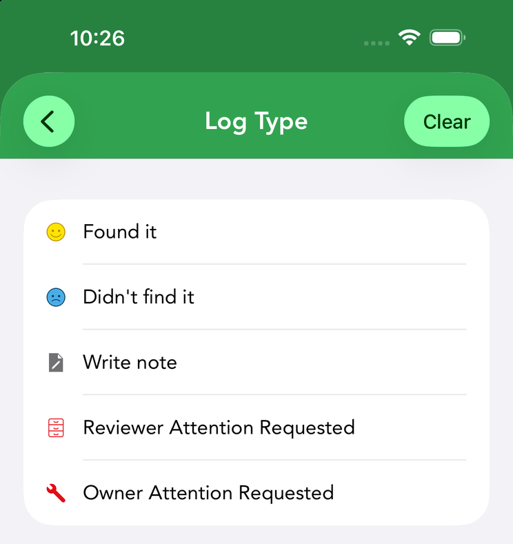
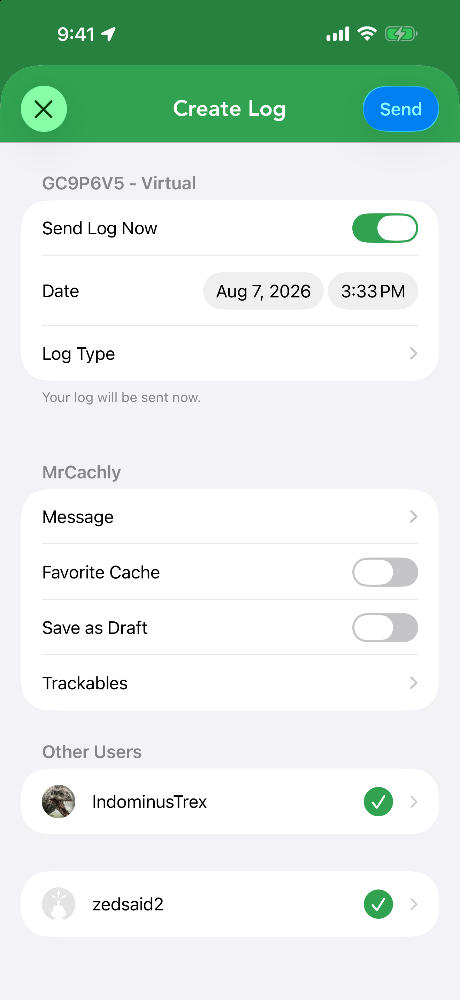

Logging a Find
Logging records your visit to a cache. Cachly lets you log a single find quickly, log for several accounts at once, save drafts for later, reuse text templates, attach photos, and award a favorite point.
The Log Geocache Screen

From a cache’s details, start a log to open the Log Geocache screen. Top to bottom it contains:
- Send Log Now — a switch controlling whether the log posts immediately or is saved for later.
- Date and time — tap either to change when the find happened (they default to right now).
- Log Type — opens the type picker. A status line underneath confirms what will happen: Your log will be sent now, or Your log will be saved and you can send it later from the Pending Logs.
- A section per signed-in user — each account gets its own Message, Favorite Cache toggle, Save as Draft toggle and Trackables row (see multi-user logging). The Trackables row selects which of that account’s trackables are dropped or visited with the log.
Choosing a Log Type

Tap Log Type to pick one. The list depends on the kind of cache and on whether you own it — Cachly only offers the types geocaching.com will accept, so you never see a Found It on your own cache or a DNF on an event. For a cache someone else owns:
- Found it — you found the cache. On a webcam cache this reads Webcam Photo Taken instead.
- Didn’t find it (DNF) — you looked but came up empty.
- Write note — a comment without claiming a find.
- Reviewer Attention Requested — flag a serious problem to a community reviewer.
- Owner Attention Requested — the cache needs maintenance from its owner.
On an event (including CITO, Mega, Giga and Community Celebration events) the find types are replaced by Attended and Will Attend, and Owner Attention Requested is dropped; Cachly defaults to Will Attend for a future event and Attended for a past one.
On a cache you own, Found it and Didn’t find it disappear (you can’t find your own cache) and the owner log types appear instead — all of them work offline, so you can queue owner logs as pending logs too:
- Owner Maintenance — you’ve visited and fixed the cache (clears a needs-maintenance flag). On an event you own this is Event Announcement instead.
- Disable — temporarily disable the listing. If the cache is already disabled you get Enable and Post Reviewer Note instead.
- Archive — permanently retire the listing.
- Update Coordinates — move the cache; Cachly also moves it locally once the log is sent.
Write note and Reviewer Attention Requested (plus Owner Attention Requested on non-events) stay available to owners as well.
Send Now, or Save for Later
At the top of the log screen is the Send Log Now switch:
- On (the default) — the action button reads Send and posts your log to Geocaching.com right away.
- Off — the button becomes Save and your log is kept as a pending log to upload later.
If you tap Send while you’re offline, Cachly notices and offers to save the log as pending instead of failing. Likewise, if you cancel a log you’ve started, it offers to Save as Pending rather than lose your write-up. Editing a pending log reopens this same screen, and pending logs can be submitted or exported in bulk from More › Pending Geocache Logs — see Pending logs.
Multi-User Logging PRO

Cachly can log a single cache under multiple geocaching.com accounts at once — see the dedicated Multi-User Logging page.
Writing the Message

Tap Message to open the log editor. A counter tracks your length against the 5,000-character limit, and a Write / Preview switch lets you check how formatting will look before you post. From the editor you can also:
- Attach photos — the image button offers Take Photo, Choose From Library and Personal Note Photos; images upload with your log.
- Insert a template — drop in one of your saved text templates, or jump to Edit Text Templates. A Clear Message Text option starts you over.
- Insert your personal note — if the cache has a personal note, the same ⋯ menu offers Insert Personal Note, which drops the note’s text in at the cursor so you can edit it into your log — handy when the note already tells the story of the hunt.
- Insert keywords — pick a placeholder from the Keywords picker instead of typing it by hand; Cachly replaces it with the real value when the log is posted (see the full list below).
- Draft with AI — the sparkle button opens Cachly Intelligence, which can write a log for you using Apple Intelligence, Claude, ChatGPT, Gemini or Mistral — you then edit and post it.
Log keywords
Keywords are placeholders written as *|name|*. Type them or insert them from the Keywords picker in the message editor, and put them in your text templates so every log fills in the details automatically. They’re replaced when the log is sent, so a pending log picks up the values current at that moment. Dates and times follow your device’s language and region settings and use the log’s date, not today’s.
| Keyword | Example | Becomes |
|---|---|---|
| You | ||
*|username|* | MrCachly | Your geocaching.com username. |
*|find_count|* | 1234 | Your find count including this log when it’s a Found it, Attended or Webcam Photo Taken, plus any Found it Drafts waiting on geocaching.com — so “Find #1234!” comes out right. |
*|find_count_no_drafts|* | 1230 | The same count, but ignoring unfinished Drafts. |
*|hide_count|* | 12 | The number of caches you own. |
| The cache | ||
*|cache_name|* | POPOS FIDI | The cache’s name. |
*|cache_code|* | GC9P6V5 | The GC code. |
*|owner_name|* | t4dpac | The cache owner’s username. |
*|cache_type|* | Traditional Cache | The cache type. |
*|cache_size|* | Micro | The container size. |
*|cache_difficulty|* | 2.5 | The difficulty rating. |
*|cache_terrain|* | 1.5 | The terrain rating. |
*|cache_state|* | California | The state, province or region. |
*|cache_country|* | United States | The country. |
*|personal_note|* | Parked at the trailhead lot | The text of your personal note for the cache. |
| The trackable trackable logs only | ||
*|trackable_name|* | Wandering Wombat | The trackable’s name. |
*|trackable_type_name|* | Travel Bug Dog Tag | Its type. |
*|trackable_owner_name|* | GeoJane | Its current holder. |
*|trackable_original_name|* | BugMaker | Its original owner. |
*|trackable_country|* | Australia | The country it started in. |
*|trackable_travel_mi|* | 2,481 | Distance traveled in miles. |
*|trackable_travel_km|* | 3,993 | Distance traveled in kilometers. |
| Date & time of the log | ||
*|date_short|* | 8/30/26 | Short date. |
*|date_medium|* | Aug 30, 2026 | Medium date. |
*|date_long|* | August 30, 2026 | Long date. |
*|week_day|* | Sunday | The day of the week. |
*|time_short|* | 3:33 PM | Short time. |
*|time_medium|* | 3:33:07 PM | Time with seconds. |
*|time_long|* | 3:33:07 PM PDT | Time with seconds and time zone. |
*|time_24h|* | 15:33 | 24-hour time. |
The picker only lists keywords that make sense where you are — trackable keywords appear when logging a trackable, cache keywords when logging a cache. A keyword that has no value (a cache with no personal note, say) is simply removed from the text. Separately from keywords, any @username you type becomes a link to that cacher’s geocaching.com profile when the log is posted.
Log Templates
If you write similar logs often, save text templates and drop them into a log with one tap. Templates can include keyword placeholders that Cachly fills in (such as the find count or date), so each log still feels personal. Manage them in Settings › Templates or via Edit Text Templates in the message editor.
Each template can be given a log type: when you create a log matching that type, the template’s text is inserted automatically — a Found It template for finds, a DNF template for the days that don’t go so well. You can also tap a template to make it the default — used for any log whose type has no template of its own; the default shows a green checkmark. Tap the ⋯ button at the right of a template row for its menu: Edit the text and log type, Set as Default (or Remove as Default on the current default), Reorder the list, and Delete. Turn the whole feature on with Enable Text Templates in Settings › Templates. In multi-user logging, each account’s own templates are applied to its message.
Drafts vs. Pending Logs
Cachly has two ways to hold a log you’re not posting as a finished log — they sound similar but work differently:
- Drafts (field notes) — turn on Save as Draft and the log is saved to Geocaching.com as a Draft. Drafts sync to the website and across your devices, and you can finish them later in Cachly or on the site. The first time you use it, Cachly explains what a Draft is.
- Pending logs — turning Send Log Now off (or saving when offline) keeps a finished log on your device. Pending logs are never sent automatically — not even when you reconnect; they wait until you choose to send them, individually or in bulk. They can be edited, submitted or exported from More › Pending Geocache Logs. See Pending logs.
Photos, Favorites & Trackables
- Photos — attach images to your log from the message editor.
- Favorite point — if you’ve found it and have points available, turn on Favorite Cache to award one to a great cache. (On certain cache types, such as events, the option is hidden because it doesn’t apply.)
- Trackables — the Trackables row logs drops and visits for the trackables you’re carrying; give each its own message and photo, use the ⋯ button to Drop All or Visit All, and swipe left to Remove one. Auto-visit can handle visits automatically.